Jayden Pillay / Portfolio
Motion studies.
Compare the three new halo previews
Three moments from the same visit. Play each study to review the movement at its intended speed.
The full stop
The cobalt dot settles into your surname as the name rises into place. Your portrait and project link are visible from the first frame.
Cobalt contours
A fan of fine cobalt lines passes behind your shoulders. A single band of light travels across the lines, revealing their shape against the ink background.
From portrait to page
As the white About section enters, a cobalt arc unbends into a rule beside the About label. The recording follows one sample scroll. In the site, your scroll position would set the pace in either direction.
After About
Give Skills a short underline movement when a category opens. Carry that line into the existing Experience timeline, then let the Projects diagram trace its routes. Education already has the book opening. Keep certification marks still for recognition and end the sequence on the Contact form, with feedback tied to submission.
Implementation notes
Play the 720 ms name accent once per session on a top-of-page visit. Keep the primary action available throughout. Use one lazy desktop Three.js surface behind the portrait, cap pixel density, and stop drawing after the light settles or the hero leaves the viewport. Use a static contour for mobile, reduced motion and WebGL fallback.
Bind the About line to native scroll through GSAP ScrollTrigger. Derive both endpoints from the layout on resize. Confirm keyboard anchor jumps, upward scrolling and the mobile crop. Compare load and frame times against the current homepage before shipping.